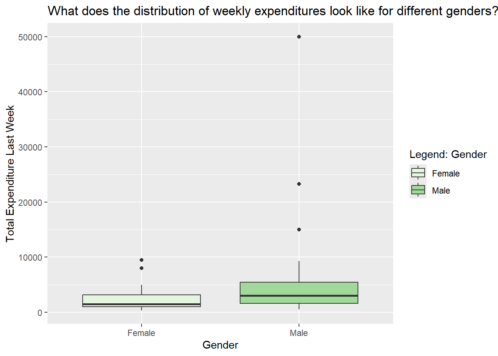

── Attaching core tidyverse packages ──────────────────────── tidyverse 2.0.0 ──
✔ dplyr 1.1.4 ✔ readr 2.1.5
✔ forcats 1.0.0 ✔ stringr 1.5.2
✔ ggplot2 4.0.0 ✔ tibble 3.3.0
✔ lubridate 1.9.4 ✔ tidyr 1.3.1
✔ purrr 1.1.0
── Conflicts ────────────────────────────────────────── tidyverse_conflicts() ──
✖ dplyr::filter() masks stats::filter()
✖ dplyr::lag() masks stats::lag()
ℹ Use the conflicted package (<http://conflicted.r-lib.org/>) to force all conflicts to become errors
library(mosaic) # Our all-in-one package
Registered S3 method overwritten by 'mosaic':
method from
fortify.SpatialPolygonsDataFrame ggplot2
The 'mosaic' package masks several functions from core packages in order to add
additional features. The original behavior of these functions should not be affected by this.
Attaching package: 'mosaic'
The following object is masked from 'package:Matrix':
mean
The following objects are masked from 'package:dplyr':
count, do, tally
The following object is masked from 'package:purrr':
cross
The following object is masked from 'package:ggplot2':
stat
The following objects are masked from 'package:stats':
binom.test, cor, cor.test, cov, fivenum, IQR, median, prop.test,
quantile, sd, t.test, var
The following objects are masked from 'package:base':
max, mean, min, prod, range, sample, sum
library(skimr) # Looking at data
Attaching package: 'skimr'
The following object is masked from 'package:mosaic':
n_missing
library(janitor) # Clean the data
Attaching package: 'janitor'
The following objects are masked from 'package:stats':
chisq.test, fisher.test
library(naniar) # Handle missing data
Attaching package: 'naniar'
The following object is masked from 'package:skimr':
n_complete
library(visdat) # Visualize missing datalibrary(tinytable) # Printing Static Tables for our data
Attaching package: 'tinytable'
The following object is masked from 'package:ggplot2':
theme_void
Attaching package: 'crosstable'
The following object is masked from 'package:purrr':
compact
library(CardioDataSets)library(vcd)
Loading required package: grid
Attaching package: 'vcd'
The following object is masked from 'package:mosaic':
mplot
library(ggformula)library(infer)
Attaching package: 'infer'
The following objects are masked from 'package:mosaic':
prop_test, t_test
library(broom) # Clean test results in tibble formlibrary(resampledata) # Datasets from Chihara and Hesterberg's book
Attaching package: 'resampledata'
The following object is masked from 'package:datasets':
Titanic
library(openintro) # More datasets
Loading required package: airports
Loading required package: cherryblossom
Loading required package: usdata
Attaching package: 'openintro'
The following object is masked from 'package:mosaic':
dotPlot
The following objects are masked from 'package:lattice':
ethanol, lsegments
library(visStatistics) # One package to rule them alllibrary(ggstatsplot)
You can cite this package as:
Patil, I. (2021). Visualizations with statistical details: The 'ggstatsplot' approach.
Journal of Open Source Software, 6(61), 3167, doi:10.21105/joss.03167
Rows: 40 Columns: 3
── Column specification ────────────────────────────────────────────────────────
Delimiter: ","
chr (2): Name, Gender
dbl (1): Total_Expenditure_Last_Week
ℹ Use `spec()` to retrieve the full column specification for this data.
ℹ Specify the column types or set `show_col_types = FALSE` to quiet this message.
money_modified
# A tibble: 40 × 3
name gender total_expenditure_last_week
<chr> <chr> <dbl>
1 Radha Female 2000
2 Prerana Female 1200
3 Chris Male 15000
4 Nireeksha Female 3620
5 Supraj Male 560
6 Adit Male 2200
7 Shweta Female 1500
8 Diya Female 1206
9 Kshama Female 1400
10 Savannah Female 2500
# ℹ 30 more rows
money_modified %>%gf_boxplot(total_expenditure_last_week ~ gender,fill =~gender,orientation ='x') %>%gf_labs(title ="What does the distribution of weekly expenditures look like?",x ="Gender",y ="Total Expenditure Last Week",fill ="Legend: Gender") %>%gf_refine(scale_fill_brewer(palette ="Greens"))

perhaps if we had surveyed normal guys it wud be comparable
3.
money%>%gf_histogram(~ total_expenditure_last_week,data = money_modified,fill ="#ff69b4",color ="black") %>%gf_labs(title ="Distribution of expenditure",x ="edd",y ="Number of Crimes")
`stat_bin()` using `bins = 30`. Pick better value `binwidth`.